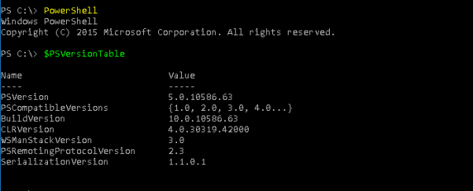

check software preinstalled
To exfiltrate data from a computer we can use the preinstalled softwares
•
Python
•
PowerShell
with $PSVersionTable we can check the version
C
:
> powershell
PS>
$PSVersionTable
